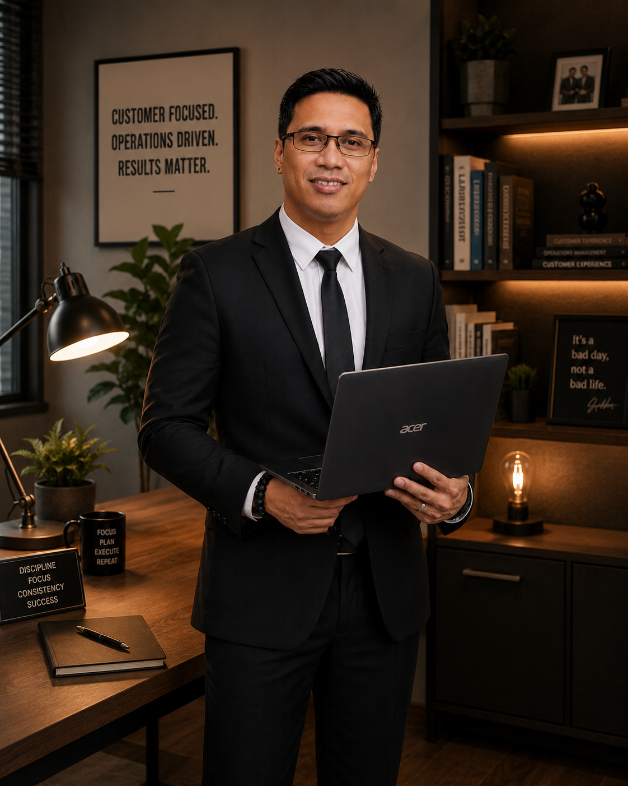

I turn customer issues into solutions.
Customer Service and Operations professional with 10+ years across customer support, e-commerce, escalation management, sales support, training, documentation and process improvement.

About Me
I combine customer empathy with operational discipline: gather the facts, build a workable process, communicate clearly, and follow through until the issue is actually resolved.
My background spans Amazon customer operations, AT&T customer and sales support, business operations management, training, and ISO document control. I am especially comfortable with complex cases, escalations, documentation, cross-team coordination, and process-driven work.
I am focused on remote opportunities in customer support, e-commerce support, operations coordination, back-office support, and virtual assistance — particularly work where written communication and problem solving matter.
- Structured escalation and resolution handling
- Accurate case and documentation practices
- Cross-functional coordination
- Customer-focused communication
- Process and compliance discipline
- Training and knowledge sharing
Core Expertise
Capabilities aligned with remote customer experience, e-commerce, operations, and back-office roles.
Professional Experience
A career built across customer experience, operations, sales support, training and document control.
Sales Representative / Customer Service Associate — AT&T Small Business
- Provide customer support and sales assistance for AT&T Small Business accounts.
- Handle account concerns while following client policies, procedures and quality standards.
- Document customer interactions and coordinate with internal teams for timely resolution.
Resolution Specialist — Escalation Supervisor Role / Acting Training Specialist
- Handled complex customer escalations requiring supervisor-level intervention and policy-based resolution.
- Coordinated with multiple Amazon sites and teams globally to deliver timely resolutions.
- Facilitated onboarding, upskilling, coaching and knowledge-sharing activities.
- Designed and rolled out a Carrier Deprioritization ticketing process for recurring delivery escalations.
Operations & Project Delivery Manager
- Managed operational teams and monitored service delivery and productivity.
- Supported cross-functional coordination across Operations, HR and Accounting.
- Implemented process improvements and monitored performance against business objectives.
Customer Service Associate — Subject Matter Expert, AT&T U-verse Green
- Led and coached sales representatives against performance targets.
- Managed schedules, reporting and operational support while ensuring quality compliance.
ISO Document Controller
- Maintained the Master Document Register and controlled document creation, revision, distribution and archival.
- Supported internal and external ISO audits and records compliance.
Featured Projects
Examples that demonstrate how I approach operational problems, not just what job titles I have held.
Carrier Deprioritization Ticketing System
Problem: A recurring delivery failure pattern was generating repeat escalations.
Approach: Gathered escalation data, identified the pattern, and proposed a routing process that allowed fulfillment teams to deprioritize the problematic carrier for affected addresses.
Outcome: Reduced repeat escalation calls tied to the failure pattern by addressing the underlying process instead of resolving the same complaint case by case.
Operations Activity & Job Tracking
Structured an operations tracker covering scheduling and dispatch, cleaner management, service delivery, job completion, client management, escalations, follow-up and operations review.
Focus: visibility, ownership, priorities, status, scheduled time, action/follow-up and operational notes.
New-Hire & Upskilling Support
Supported onboarding-to-production training and upskilling programs, including two new-hire classes of approximately 25 agents each and additional role-transition classes.
ISO Document Control
Maintained controlled-document records, revision histories, distribution, archival and audit support — building a strong foundation for detail-oriented remote back-office work.
Looking for someone who can own the issue from intake to resolution?
I am open to remote customer support, e-commerce support, operations coordination, back-office and virtual assistance opportunities.
Contact
For opportunities, project work or collaboration.
Email: albert.lumbang17@gmail.com
Location: Bacoor, Cavite, Philippines
Phone: +63 968 548 0188
LinkedIn: linkedin.com/in/albertolumbang